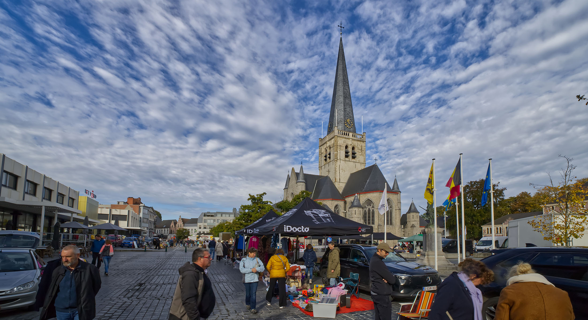
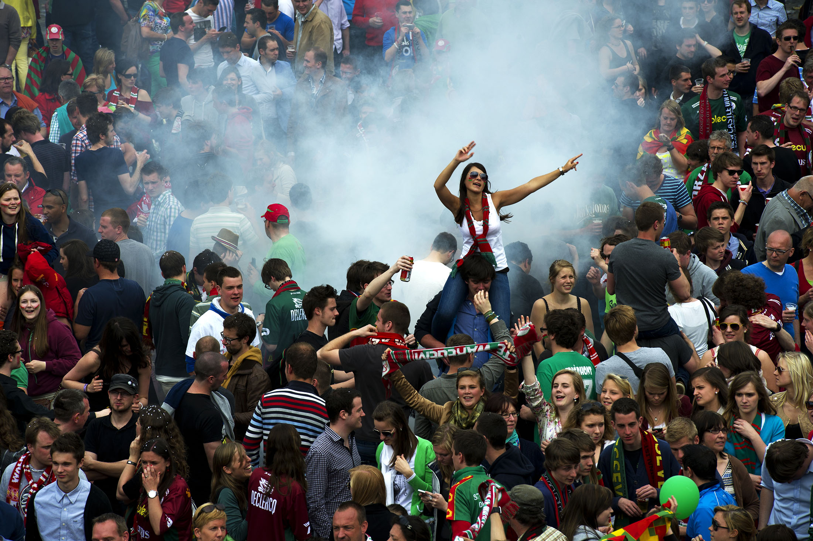
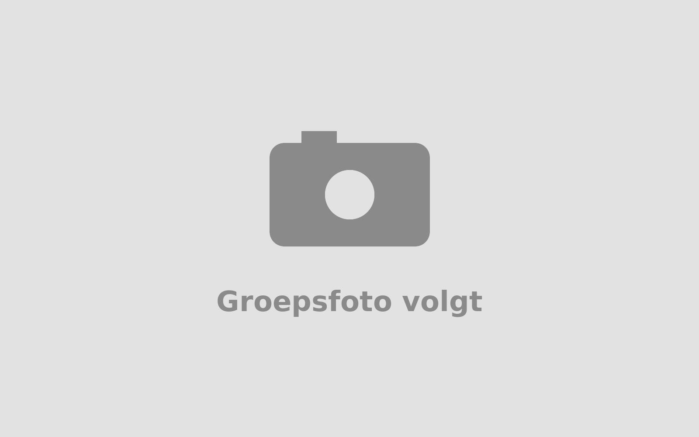
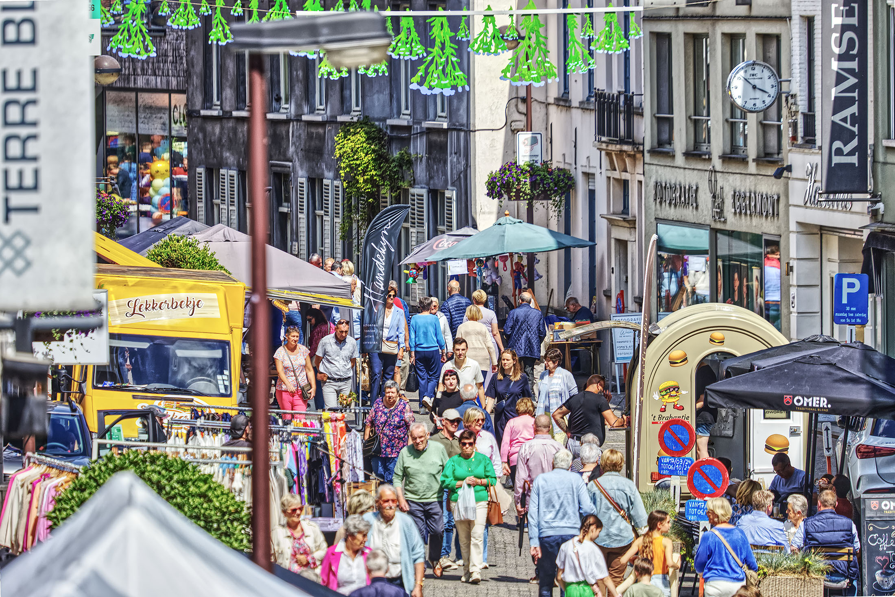
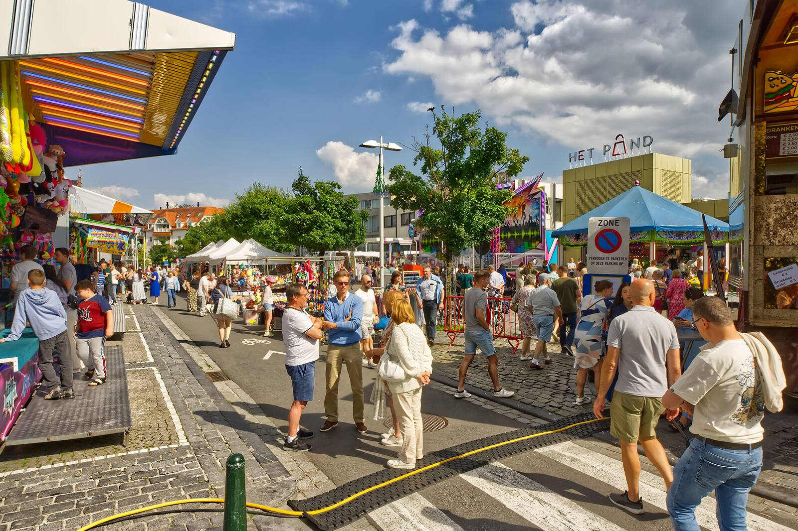
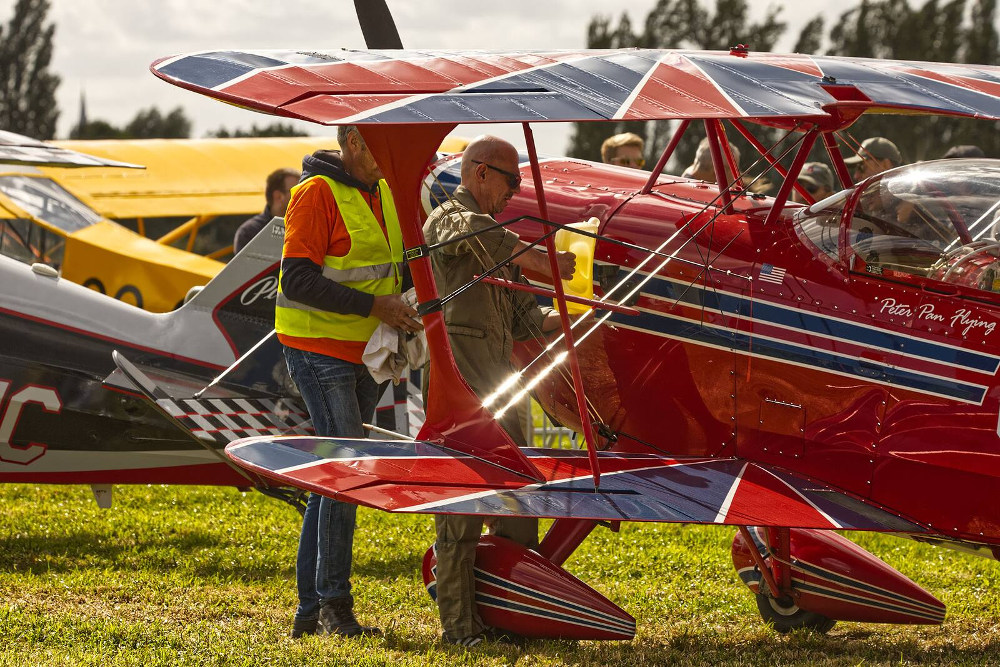
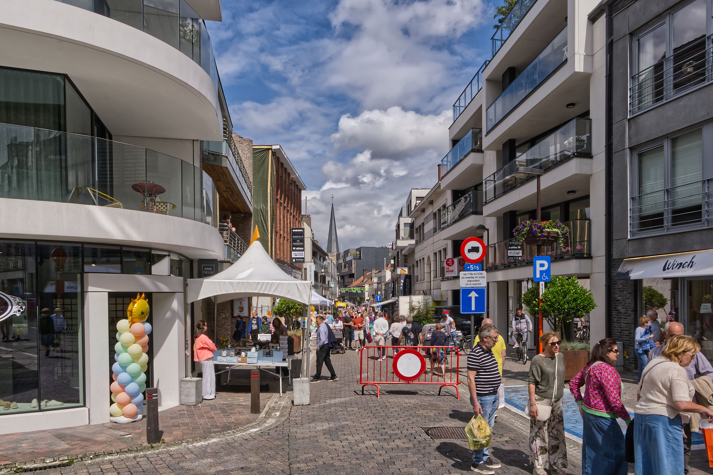

Fotoclub sinds 1965
WARO-Waregem
Foto: Astrid Callens
"Fotografie haalt een moment uit de tijd en verandert het leven door het stil te houden."
Lidmaatschap

Word nu lid van Foto- en Diaclub WARO Waregem!
Ben jij gebeten door fotografie en wil jij je passie delen met anderen? Dan ben je van harte welkom in onze club.
Wij komen maandelijks bijeen op zondag voormiddag en hebben tussendoor verschillende praktijklessen.
Wens je meer info, klik dan om onderstaande link.
Lid wordenWat is WARO?
Fotoclub WARO Waregem is een club, toegankelijk voor elke fotograaf. De beginnende fotograaf werkt samen met de meer gevorderde fotograaf om zo hun passie te delen. Naast de maandelijkse bijeenkomsten worden er regelmatig extra activiteiten georganiseerd. Doel van onze club is dat iedereen extra kennis kan opdoen en experimenteert.
“WARO, het verhaal…”

Fotograferen Evenementen
Onze leden fotograferen regelmatig Waregemse activiteiten. Ook kan je ze op andere locaties spotten.
Evenementen uit Waregem kan je hier terug vinden in ons album.
Foto's kijken kan hier






